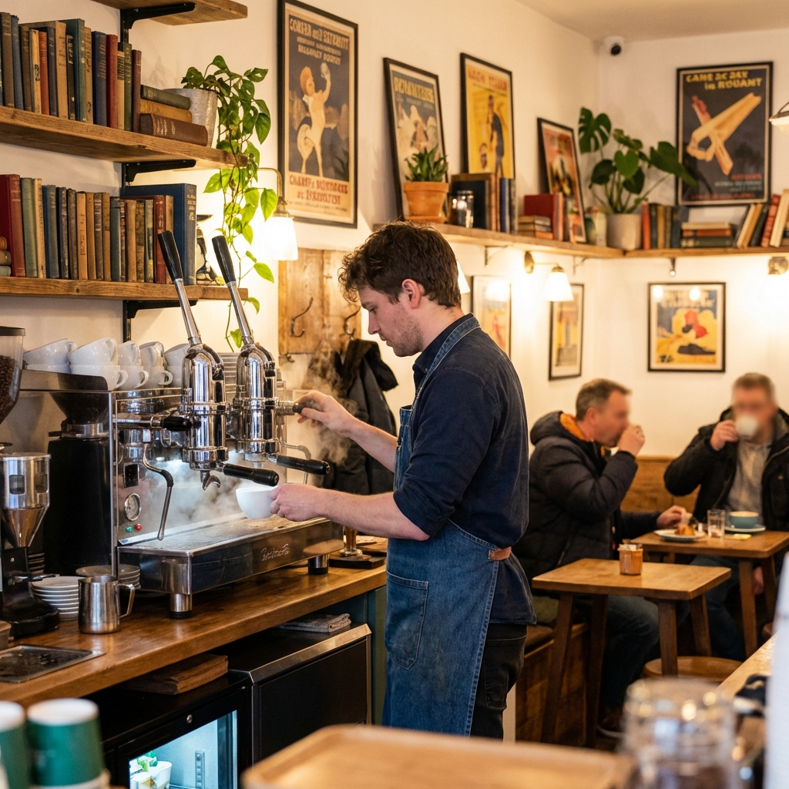

咖啡知識、生活分享與活動資訊
2026.01.20
從淺焙到深焙，不同的烘焙程度會帶來截然不同的風味體驗。本文將帶您深入了解烘焙的奧秘...
2026.01.18
每週六下午，我們邀請您一起分享閱讀心得，品味咖啡與文學的美好結合...
2026.01.15
想在家也能享受精品咖啡？讓我們從基礎開始，學習手沖技巧與器具選擇...
2026.01.12
探索咖啡的發源地，了解衣索比亞咖啡的獨特風味與文化背景...
2026.01.10
如何選擇適合搭配咖啡的甜點？讓我們分享一些美味的組合建議...

2026.01.08
跟隨我們的腳步，一起看看咖啡館從早到晚的日常運作與溫馨時刻...